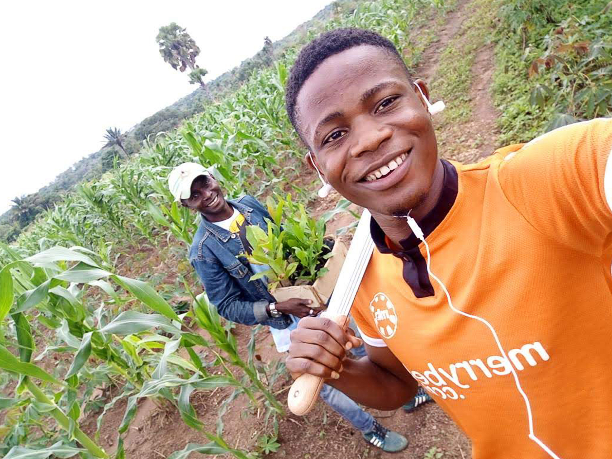

 Farming is a great way to describe the lifestyle and work of people whose jobs are in the agriculture industry. Here at LATID we focus on the littlest details. From the products down to the soil. We put much effort in the soil type.
Looking at the soil texture, soil constitute water retention, soil type and other essentials before making use of it for planting. Just like Builders and architects focus on the foundation of a building we put more efforts in or products foundation. We also carefully select our seeds and other materials which we use for planting. making sure the best comes out of each of our farm produces.
We make sure proper care and inspection is giving to our crops during cultivation. The best cultivation practices are applied, we use 100% organic fertilizers and safe pesticides. At the point of harvest, we never harvest and store any bad produce. g sure consumers and customers get the best, as from the start of the whole farming process we have the consumers in mind making sure our produce is totally healthy, harmless and is packed with great nutritional values.
We specialize in many farm products including and not restricted to cashew, yam, rice, tomatoes, cassava, maize, bananas, palm, vegetables, etc. Our methods of supply are customer friendly as well as pocket friendly. We do deliveries to all parts of the nation and we supply in both large and small quantities.Our farming techniques are advanced and mechanized and these techniques are acquired from the best and are practiced by the best.